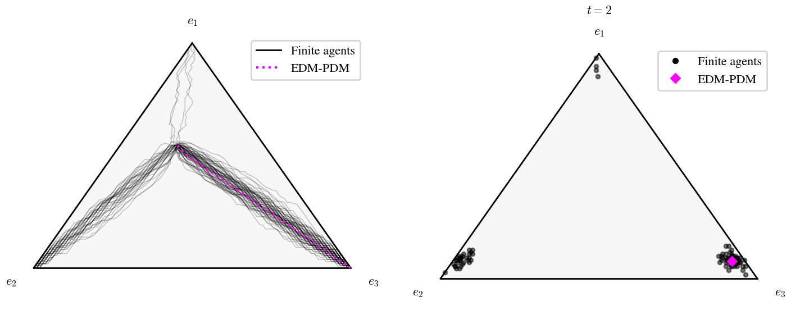
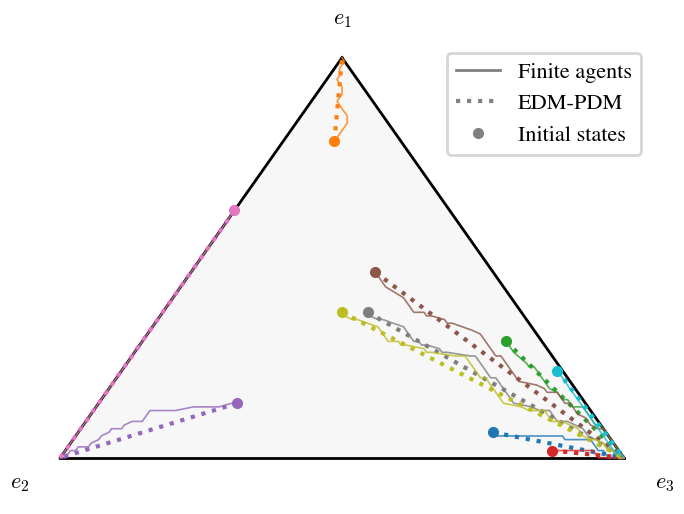

Equilibrium selection in a coordination game¶
This example uses ensembles of finite-agent simulations
(run_ensemble()) to study equilibrium selection in a game with several equilibria. It
covers the two typical uses of ensembles:
Same initial state, different seeds: how much do the outcomes vary because of the randomness of the revisions?
Different initial states, same seed: where does the population go from each initial state?
The game¶
In a coordination game, agents earn more when they play the same strategy as others. We consider three strategies, with fitness
so strategy 3 has the highest payoff when everyone coordinates on it. Each vertex \(\mathbf{e}_i\) (everyone plays strategy \(i\)) is a strict Nash equilibrium. There is also a mixed Nash equilibrium, where all strategies have the same payoff (\(a_i x_i = 6/11\) for all \(i\)):
Agents revise with the logit protocol (Softmax) with a small noise level
\(\eta = 0.05\): they almost always pick a strategy with the highest payoff, but every strategy has a positive
probability.
1import numpy as np
2from popgames import (
3 SinglePopulationGame,
4 PayoffMechanism,
5 PoissonRevisionProcess,
6 Simulator,
7)
8from popgames.revision_protocol import Softmax
9from popgames.utilities import sample_initial_states
10
11# Coordination game: f_i(x) = a_i * x_i
12a = np.array([1.0, 2.0, 3.0]).reshape(3, 1)
13
14def fitness_function(x):
15 return a * x
16
17population_game = SinglePopulationGame(
18 num_strategies=3,
19 fitness_function=fitness_function,
20)
21
22payoff_mechanism = PayoffMechanism(
23 h_map=fitness_function,
24 n=3,
25)
26
27revision_process = PoissonRevisionProcess(
28 Poisson_clock_rate=1,
29 revision_protocol=Softmax(eta=0.05),
30)
31
32sim = Simulator(
33 population_game=population_game,
34 payoff_mechanism=payoff_mechanism,
35 revision_processes=revision_process,
36 num_agents=110,
37)
38
39# Case 1: same initial state, different seeds
40x_mixed = np.array([6, 3, 2]).reshape(3, 1) / 11 # Mixed Nash equilibrium: a_i * x_i = 6/11 for all i
41
42# The logit dynamic is not Nash stationary, so x_mixed is not a rest point of its EDM: with equal payoffs, revising
43# agents pick each strategy with probability 1/3, so the drift (1/3, 1/3, 1/3) - x_mixed ~ (-0.21, 0.06, 0.15) sends
44# the EDM to e3. Finite-agent runs follow the same drift plus O(1/sqrt(N)) noise, and x_mixed is close to the basin
45# boundaries, so some runs end at e1 or e2 instead (fewer as N grows).
46ens = sim.run_ensemble(T_sim=10, num_runs=100, x0=x_mixed, seed=0)
47
48selected = np.bincount(ens.final().x.argmax(axis=1), minlength=3) / len(ens)
49print(f'Fraction of runs ending at e1, e2, e3: {selected}')
50
51ens.plot(plot_type='ternary', max_runs=100, plot_deterministic_approximation=True, plot_gne=False)
52ens.plot(plot_type='final', t=2, plot_deterministic_approximation=True, plot_gne=False)
53
54# Case 2: different initial states, same seed
55x0s = sample_initial_states(population_game, num=10, seed=3)
56ens = sim.run_ensemble(T_sim=10, x0=x0s, seed=[0] * len(x0s))
57
58ens.plot(plot_type='ternary', plot_deterministic_approximation=True, plot_gne=False, alpha=0.8)
Same initial state, different seeds¶
The first ensemble starts 100 runs at the mixed Nash equilibrium \(\mathbf{x}^*\) (with 110 agents, so that \(\mathbf{x}^*\) is
an exact number of agents per strategy), each with its own seed (derived from seed=0).


The deterministic approximation (EDM, dotted) goes to \(\mathbf{e}_3\), but the runs split between the equilibria (left: trajectories of all runs; right: their states at \(t=2\)):
Fraction of runs ending at e1, e2, e3: [0.04 0.31 0.65]
A third of the runs end at an equilibrium that the deterministic approximation does not predict. A single run could have suggested either outcome: the ensemble shows the probability of each one.
Why the EDM goes only to \(\mathbf{e}_3\)¶
With the logit protocol and a unit Poisson clock rate, the EDM is
where \(\sigma_\eta\) is the softmax with temperature \(\eta\).
Being a Nash equilibrium is a property of the game: at \(\mathbf{x}^*\) no agent can gain by switching. Being a rest
point (\(\dot{\mathbf{x}} = \mathbf{0}\)) is a property of the dynamic, and the two coincide only for some dynamics.
The dynamics of Smith and BNN are Nash
stationary: agents only switch to strategies that earn strictly more, so their rest points are exactly the Nash
equilibria. Under Replicator, agents only imitate strategies that earn strictly
more, so every Nash equilibrium is a rest point. (The converse fails: the replicator dynamic also has non-Nash rest
points on the boundary of the simplex, since unused strategies are never imitated.)
The logit dynamic is not Nash stationary. Its rest points solve \(\mathbf{x} = \sigma_\eta(\mathbf{f}(\mathbf{x}))\). They are the logit equilibria (quantal response equilibria), in which a small fraction of agents always picks a worse strategy at random. Each of them lies close to a Nash equilibrium and converges to it as \(\eta \to 0\). The logit equilibrium near \(\mathbf{x}^*\) is \((0.567, 0.264, 0.169)\) for \(\eta = 0.05\), \((0.549, 0.271, 0.179)\) for \(\eta = 0.01\), and \((0.5458, 0.2726, 0.1816)\) for \(\eta = 0.001\), compared with \(\mathbf{x}^* \approx (0.5455, 0.2727, 0.1818)\).
So \(\mathbf{x}^*\) itself is not a rest point of the logit dynamic. All payoffs are equal at \(\mathbf{x}^*\), so revising agents pick each strategy with probability \(1/3\), whereas \(\mathbf{x}^*\) has 6/11 of the agents on strategy 1. The drift at \(\mathbf{x}^*\) is therefore
The drift takes agents away from strategy 1 and gives most of them to strategy 3, whose payoff then pulls ahead. Coordination amplifies this lead. The EDM is deterministic: from one initial state it has one trajectory and one endpoint, \(\mathbf{e}_3\).
The finite population follows the same drift, plus random fluctuations of order \(1/\sqrt{N}\) (about \(0.1\) for \(N = 110\)). That matters here because \(\mathbf{x}^*\) lies very close to the boundaries between the basins of attraction. The EDM started from \(\mathbf{x}^*\) plus a random perturbation of size \(0.01\) ends at \(\mathbf{e}_2\) about 30% of the time. The first few revisions can thus push a run across a boundary, and coordination then locks it into that basin.
So the EDM does not pick the most likely equilibrium. It is the limit of the finite-agent dynamics as \(N \to \infty\), and it follows the expected drift. Here \(\mathbf{e}_3\) is also the most frequent outcome, because the drift from \(\mathbf{x}^*\) points into its basin. The other outcomes come from finite-population noise, so they fade as the population grows:
\(N\) |
e1 |
e2 |
e3 |
|---|---|---|---|
110 |
0.04 |
0.31 |
0.65 |
1100 |
0.00 |
0.07 |
0.93 |
11000 |
0.00 |
0.00 |
1.00 |
(100 runs each, seed=0.)
Note
With a protocol whose switching rates vanish when all payoffs are equal (e.g.,
Smith, BNN, or
Replicator), \(\mathbf{x}^*\) would be a rest point of the EDM and absorbing for
the finite population: no agent ever switches from \(\mathbf{x}^*\), and all runs stay there. This is why the example
uses the logit protocol.
Different initial states, same seed¶
The second ensemble starts one run from each of 10 initial states sampled uniformly at random on the simplex
(sample_initial_states()). All runs use the same seed (seed=[0] * 10), so they draw the
same random numbers (common random numbers): the runs differ only through their initial states.


Each color is an initial state, with its deterministic trajectory dotted. The plot shows the basins of attraction of the equilibria: most initial states lead to \(\mathbf{e}_3\), the equilibrium with the highest payoff, and only initial states with many agents already playing strategy 1 or 2 lead to \(\mathbf{e}_1\) or \(\mathbf{e}_2\). Away from the boundaries between the basins, the finite population follows the deterministic approximation closely.
Combining both¶
Both designs can be combined, e.g., 20 runs (with independent seeds) from each initial state, to estimate the probability of reaching each equilibrium from each initial state:
ens = sim.run_ensemble(T_sim=10, x0=np.repeat(x0s, 20, axis=0), seed=0)
for g, runs in enumerate(ens.groups):
selected = np.bincount(ens.final().x[runs].argmax(axis=1), minlength=3) / len(runs)
print(f'Initial state {g + 1}: {selected}')
See Ensembles of simulations for the other plot types and the details of
run_ensemble and EnsembleResult. The example runs in a few seconds with the numpy backend; for
larger populations or ensembles, consider the Numba backend (backend="numba").